| [1943: Tsjip/De Leeuwentemmer, eerste druk (AdsD3)] |
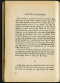
Naar boven]
Mijn dochter is getrouwd en heeft ons verlaten. Nog steeds zie ik mijn vrouw zooals zij naast mij stond toen Adele heenging om den man te volgen. Haar alledaagsch gezicht vertrok tot een masker dat lilde als onder de striemen van een zweep. Ja, zij wil blijven zoogen tot onzen laatsten dag. zoogenonzenlaatsten. Maar een hoos heeft ons uiteengejaagd: dat meisje de baan van het moederschap| op en ons beiden weer naar den ouden haard toe| waar dat smeulend leven moet voortgezet. Toen echter die jongen voor onze voeten gelegd werd, toen is mijn oude bedgenoot aan 't stralen
gegaan als had zij zelf |gebaard en in gedachten bracht zij de hand aan hare blouse, als om die los te knoopen. hare |knoopen Haar sloffen werd opnieuw een getrippel en haar geklaag |een hooglied. En ikzelf heb mij opgericht als om tot groote daden over te gaan. |
Ik moet die |beroering boekstaven, want voor ons is het misschien de laatste geweest. En nog wel met spoed, vóór de eindelijke versuffing haren greep op mijn geest heeft gelegd. Want ik loop naar de zestig|.
Ik ben weer eens vast overtuigd dat dit mijn laatste geschrijf zal zijn. Het gaat immers niet aan, voor iemand die vrouw en kinderen ten laste heeft, zich telkens 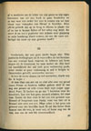
Naar boven]
af te zonderen om de leden van zijn gezin en zijn eigen binnenste van uit een hoek te gaan bespieden| en ze een voor een onder het mes te nemen om uit hun bloed voor vreemden een filtraat
te bereiden. Mijn plicht gebiedt mij op de brug te blijven in plaats van af en toe te komen kijken of het schip nog drijft. En moet ik na zoo'n geploeter niet telkens weer gluiperig in mijn huiskring plaats nemen, als een die niets ontheiligd| die niets op zijn geweten heeft?
Verduiveld, dat zou geen slecht begin zijn. Mijn poëtische bevliegingen zal ik voorstellen als het bereizen van een vreemd land, waarvan de lokstem mij komt tergen als ik vreedzaam bij onze kachel zit. Een land vol heerlijkheid dat mij toch geen voldoening geeft, zeker omdat er geen voldoening in mij te krijgen is. Ontevreden geleefd, ontevreden sterven.|
Ik kon de eerste zinnen nu wel neerzetten, dunkt mij. En ik begin:
Ik kom thuis van een reis en vind alles voor mij gereed staan. Vrouw en kinderen hebben gedaan alsof ik niet weg was geweest en mijn vrouw heeft
mijn souper opgediend. Punt. Ik herlees en ga aan 't huiveren voor die banaliteit. Zoo iets kan geen mensch schelen, dat staat vast. Zooals zij daar staat is het een reis geweest naar Brussel of hoogstens naar Parijs, want van hier uit is Brussel niet eens een reis.| Maar zeker is het geen reis geweest naar dat heerlijke land. Ik zal dus liever thuis komen van die reis, je weet wel, of beter nog van de reis, dus van de reis bij uitnemendheid.
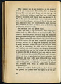
[96QuicklinkSluit Varianten: uit En vind alles voor mij gereed staan.
Vrouw en kinderen hebben gedaan, alsof ik niet weg was geweest. Dat gedaan bevalt mij niet. |Er zit een ge 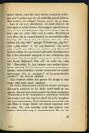
Mijn kinderen hebben heel gewoon "Pa" gezegd en mijn vrouw heeft mijn souper opgediend.
Bij nadere beschouwing steekt dat souper mij tegen. Als zoo'n recidivist in het dolen recht heeft op een souper, dan kan men onzen poedel óók laten soupeeren. Trouwens, al is het voorgezette in substantie werkelijk een souper, ook dan nog zou ikzelf bij zoo'n terugkeer weigeren te soupeeren. Ik kan hoogstens eten en daarmee uit. Maar ik weiger beslist tot ritueel soupeeren over te gaan. Wie zich schuldig voelt kan immers niet nalaten bovendien nog te manifesteeren? En een die 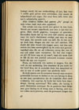
Naar boven]
betrapt wordt bij een verkrachting, of zoo, kan voor 't zelfde geld gerust eens |uitvloeken. Dat maakt de schanddaad niet erger. Het staat hem zelfs beter dan zoo'n schijnheilig gezicht.
Mijn kinderen hebben heel gewoon "Pa" gezegd en mijn vrouw heeft mijn eten opgediend.
Dat schijnt mij nog steeds niet geheel in den haak. Wordt een souper opgediend, met eten is dat niet het geval. Eten wordt gegeven, voorgezet of genomen. Bovendien komt het op het eten zelf minder op aan, want dat zoo'n thuiskomst eindigt met eten en naar bed gaan, dat spreekt toch van zelf. En ik ben toch op zoek naar dingen die niet van zelf spreken. Mij dunkt dat mijn vrouw iets zeggen moet, wat dan ook, anders zou haar aanwezigheid op de scène niet gerechtvaardigd zijn. |op de scène En als zij volkomen zweeg dan zou zij mij ook zeker niets |voorzetten. Zij kon dus vragen eet jij? Of beter nog eet jij soms?, want die soms sluit in dat zij aan een positief antwoord evenmin waarde hecht als aan een negatief.
Neen, zij behoorde iets anders te zeggen. Iets dat treft als een mokerslag. Iets waardoor ik pas recht tot het besef kom dat ik werkelijk thuis ben aangeland en niet in een of ander prieel van gindsche land.
Ik denk opeens aan de restanten waaruit onze soupers gewoonlijk bestaan en besluit er toe een beroep te doen op een paar specialiteiten die de huiselijke sfeer sterk evokeeren. Iets waarvan de lucht het heele huis doordringt. Haring| misschien? Wel zeker, die haring is goed. Bovendien nationaal. En in gindsche land krijgt men geen haring gindsche en al kreeg men er haring, men zou het ruiken noch proeven, want de gewoonste dingen zijn 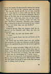
Naar boven]
er zoo heel anders. Zoodra iemand in haring weer haring proeft is hij reeds op den terugweg naar den haard.
Nu nog een tweede gerecht| om een keus mogelijk en de vraag logisch te maken, liefst iets dat niet ruikt maar walgt, want die eene stank is voldoende. eene Nieren? Maar als die klein zijn en met sluwheid klaargemaakt, dan merk je 't niet eens, zeker niet op een tooneel. tooneel
Neen, geen nieren. Grooter, hooger op! Laat nog meer kandidaten aantreden. Niemand moet verlegen zijn, al zwemt hij in zijn vet of al druipt hij van 't bloed.
Walgelijk genoeg. Maar de regisseur vindt het ongewoon op een huiselijke tafel. Meer iets voor een restaurant.
En die dikke, die door zijn knieën zakt?
Ja lever is goed. Lever van een oud beest, als die te krijgen is.
En meteen ligt een bruine massa voor mij, midden door gesneden bij wijze van referentie, zoodat ik inzage krijg in die ingekankerde gaten die als zooveel oogholten zijn.
Met lever en haring is die vrouw tenminste gewapend. Zij kan mij nu de volle laag geven. | Mijn kinderen hebben dus heel gewoon Pa gezegd en mijn vrouw heeft gevraagd wat ik verkoos, lever of haring.
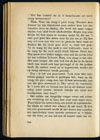
Naar boven]
Wat kan iemand nu in 's hemelsnaam op zoo'n vraag antwoorden?
Dus: ik heb niet geantwoord. Toch dient hier misschien gezegd waarom ik gezwegen heb, want op die vraag, die geen vraag was, kon ik best antwoorden met iets dat geen antwoord is. Met verrek |bij voorbeeld. In 't leven plat en brutaal| zou het in dit litterair landschap zeker passen. Scheldt Othello die schat niet doodgewoon voor hoer?
Het stellen van dergelijke vragen |stemt mij echter zoo verdrietig dat ik bang ben voor mijn eigen stem. Want klinkt die neerslachtig, dan jubelt de tegenstander. En klinkt zij valsch dan schaam ik mij dood. Ik heb dus niet geantwoord omdat ik niet kiezen kon tusschen een neerslachtig maar oprecht antwoord in 't bijzijn van die lever, en een dat sist of snauwt maar mij on 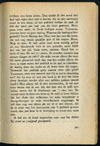
Naar boven]
voldaan zou laten zitten. Dus| omdat ik den moed niet had mijn eigen stem aan te hooren. Als ik niet antwoord moet ik iets doen, of het publiek verlaat de zaal.
Ik heb dus maar een stuk van die lever genomen. Neen| geen lever meer, in Gods heiligen naam. Trouwens, waarom lever en geen haring. Waarom die haring achter gesteld? achter gesteld Goed|. Haring dan. Maar wat dan met die lever, die mij nog steeds aankijkt met al die oogen. Neen|. Weg er mee. Ik heb jullie heel even noodig gehad als een bloedroode vlek in een grisaille, maar blijft mij van het lijf. Vade retro, satanas. Good bye to both of you. En wel te rusten. Er stonden immers nog andere dingen op| tafel? Als mijn vrouw alleen die twee bij name genoemd heeft dan was het omdat alleen die
twee in staat waren het publiek in de zaal te schokken, de haring door die lucht en de lever door die oogen. dieoogen Verwacht het publiek geen emotie voor zijn geld? zijn Trouwens, weet een mensch wat hij in zoo'n stemming eet? Als hij daar zit met een brok in de keel dat bijna niets doorlaat zoodat alles een zelfden grijzen smaak heeft? Niet alleen wil ik niet antwoorden, ik wil niet eens weten wat ik eet. Als dat kon zou ik zelfs niet willen weten dat ik überhaupt aan 't eten ben. En vooral vrees ik door een keus op de tafel te laten blijken dat het thuis zijn volkomen tot mijn bewustzijn is doorgedrongen en mijn tevredenheid wegdraagt. Ik wil daar nog wat zitten als zat ik in een droom. Als ik in mijn rug het meevoelen van 't publiek gewaar word, dan pas kom ik in beweging en neem zoo maar iets. zoo
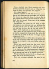
[102QuicklinkSluit Varianten: uitDus: heb ik de hand uitgestoken naar wat het dichtst bij stond en zwijgend mijn maag gevuld. Zoo is het|. En ter wille van de poëzie zal ik maar | verzwijgen dat het mij gesmaakt heeft.
Zij schijnen geweten te hebben dat ik terugkeeren zou en dat vind ik vervelend. Maar had ik mij boos gemaakt dan zou ik, om logisch te zijn, weer hebben moeten opstappen.
Alweer een gruwel, zooals het daar staat. Neen, man, zij schijnen dat niet geweten te hebben, zij wisten het. Zij waren er zeker van. Zij waren er gerust in. On ne te gobe pas. Dat dolen behoort tot je onschadelijke excentriciteiten, waar zij al jaren pret in hebben. Ik zit nog niet aan tafel of zij kaarten reeds door.
Neen, niet vervelend, vriendlief. Dat woord | is | zoo 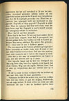
Naar boven]
ongezouten dat het zelf vervelend is. Ik zou het misschien vervelend gevonden hebben indien zij een oogenblik hadden gedacht dat ik nooit meer terugkeeren zou, dus dat ik stapelgek geworden was. Maar hun gerustheid, hun zekerheid heeft mij beschaamd en diep gegriefd. Gegriefd of diep gegriefd? Gegriefd is altijd diep. Maar de regisseur laat | diep toch staan, want dat leest beter zegt hij. Gegriefd is zoo'n woord waaraan een lettergreep schijnt te ontbreken.
Echt slap is dat boos. Ik kan mij boos maken als zij de kachel laten uitgaan, maar had ik gereageerd, wat ik niet gedaan heb, dan hadden zij wat te hooren gekregen. Een storm, mijnheer. Een geloei. Een gebulder. Dus: maar was ik aan 't bulderen gegaan.
Dan had er dus niets op overgeschoten, om logisch te zijn, dan met weerzin weer op te staan.
Dat logische hangt mij de keel uit. Onlogisch zou dan nog beter zijn, want het logische is de haard, dus thuis blijven. Weg | met die logika. Heraus. Dus: had er niets op overgeschoten dan met weerzin weer op te staan.
Ik zal nu maar in eens verklaren dat het trekken mij niet meer lokt, want ik moet opschieten.
Volkomen eerlijk is dat anders niet, want het trekken lokt mij nog steeds, al gaat
die neiging diminuendo, net als mijn eetlust. Ik denk echter nu reeds aan mijn kleinzoon die aan 't slot de hoofdrol spelen moet 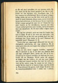
Naar boven]
en die mij moet opwekken tot een laatsten tocht. En hoe vaster ik bij den haard geankerd zit, des te treffender zal zijn ingrijpen zijn. Doorliegen dus. 't Is hier immers een schouwburg? En in dit geval is liegen heilige plicht, ter eere van dat kind| wiens pad ik reeds vanaf de eerste bladzijde effenen moet, ook al verschijnt hij pas heel achteraan, als het bouquet bij een vuurwerk. Ik heb vroeger | gezegd dat men van in 't begin het oog moet houden op het slotakkoord, waarvan iets door 't heele verhaal geweven moet worden, als het leitmotief door een symphonie. En ik moet koken volgens eigen recept.
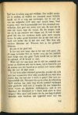
[105QuicklinkSluit Varianten: uitEn zoo is het goed ook.
Er zal toch zeker niemand gevonden worden die zich niet laat vermurwen door mijn nooddruft
om voor dien ouden dag van ons aan 't werk te gaan? Dat zou onmenschelijk zijn. onmenschelijk Niemand die op de scène de erkenning blijft eischen van mijn nog steeds positief verlangen naar gindsche land| ook al zouden bij een volgenden tocht vrouw en kinderen verhongeren, ook al zou daardoor dat kleinkind in 't heele stuk niets te doen krijgen? Men moet toch inzien dat ik, zoo lang ik ginder dwaalde, mijn kinderen niet opgevoed maar van hen 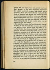
Naar boven]
genoten heb, voor mijn vrouw niet gezorgd maar met haar gespeeld. Is dat geen doorslaand argument? Het publiek moet toch meegaand zijn, anders kan ik opdoeken. Plicht gaat | immers boven waarheid? Nu vindt die regisseur weer dat met mijn kinderen gespeeld en van mijn vrouw genoten beter is dan van mijn kinderen genoten en met mijn vrouw gespeeld. Om oprecht te kunnen spelen, zegt hij, moet minstens een van de partners jong zijn. En de zaal zou dat spelen van dat koppel op jaren niet slikken.
Nu mijzelf stevig aan den haard gemetseld om van dat kind, dat mijn boeien breken moet, een bovenaardsche kracht te doen uitgaan, want daar reken ik op om 't publiek te doen opstaan. Hier bij 't vuur, in onze kooklucht, komt het er opaan mijn plicht te doen als een doodgewoon mannetje dat ik ten slotte ben. Dat doodgewoon mannetje is er op berekend om de besten onder de kijklustigen op dat moment te doen verklaren besten dat ik volstrekt niet zoo doodgewoon ben, maar een heele Piet. Stel je voor dat ze mij gelijk gaven.
Nog steeds heb ik een gevoel alsof ik pensum verdien omdat het | thuis blijven een beetje intempestief is geweest, intempestief niet voldoende gewettigd|, alsof ik nog steeds den indruk maak dat ik daar moedwillig blijf zitten om met het optreden van dat kleinkind, dat gedaan
moet krijgen wat ik van mijzelf niet meer verkrijgen kon, de toeschouwers te epateeren als de boeren op de kermis met een kind zonder hoofd. Ik zal de noodzakelijkheid om thuis te blijven dus nog maar wat aandikken, want ik kan toch niet meer terug. Dit is mijn laatste kans, | want zij groeien als kool. Een heeft al een snor en een ouwelijke trek om den mond. Is het nu 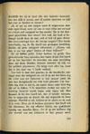
Naar boven]
duidelijk | dat zij | in staat zijn | den kapitein desnoods aan den dijk te zetten, met of zonder pensioen| en zelf het roer in handen te nemen?
Zoo heb ik daar dan gezeten, in die kooklucht|, omringd door dat zwijgend rot, tot ik op een heerlijken dag die schat van een kleinzoon in huis gewaar werd, die aan hun dwingelandij een eind heeft gemaakt. Die heerlijke dag sluit in dat ik, als zuster Anna, naar dien dag zat uit te kijken. 't Is misschien sterker dat mijn bevrijding bewerkt wordt tegen mijn eigen wil. Hoe knusser ik bij den haard zat, met of zonder ketenen, des te magischer de kracht die mij nogmaals de
baan opjaagt. Heerlijk er | uit, heilloos in de plaats en de zaak is in orde. Maar als ik heilloos accepteer dan heeft ook die kleinzoon, die erg officieel klinkt, een qualificatie noodig van dezelfde kleur. Tot ik op een heillooze dag dat mormel van een kleinzoon in huis gewaar werd. 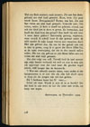
Naar boven]
Wel een | flink mormel, mais passons. Die aan hun dwingelandij een eind heeft gemaakt. Kom, kom. Die grap wordt flauw. Dwingelandij? Rotten was het. Die aan hun rotten een eind heeft gemaakt. Volstrekt niet. Ons rotten, vader. Je hebt er jezelf toe geleend, vriend, om ook dat kind iets te doen te geven. En bovendien, hoe heeft dat kind hem dat gelapt? Hoe heeft hij zich voor 't eerst laten gelden? Eenvoudig genoeg, regisseur, want terwijl ik schrijf hoor ik zijn gekraai onder de tafel zoodat ik mijn lompe voeten niet verzetten durf. Met zijn gekraai dus. En om bij dat geluid ook iets te zien te geven, voeg ik er |gauw die bloote billen bij, in de vaste overtuiging, dat die in den smaak zullen vallen. Die met zijn gekraai en zijn bloote billen aan ons rotten een eind heeft gemaakt.
Het slot volgt van zelf. Terwijl heel de zaal opstaat zijn mijn boeien verkoold tot asch en arm in arm zijn wij | opgestapt naar dat land waar die gouden vogel jubelt, véél hooger dan de leeuwerik.
't Was | een uittocht zonder risico, want onder al die huisgenooten is er | niet één die zijn bek durft open te doen als die jongen zijn wil laat gelden. |
Bij 't herlezen komt het U voor....
Schei uit| vent. Wordt je niet ijl in je hoofd? Zet dat kind in zijn stoel en laat die tekst met vrede, op hoop van zegen. Antwerpen, 22 November 1934. |